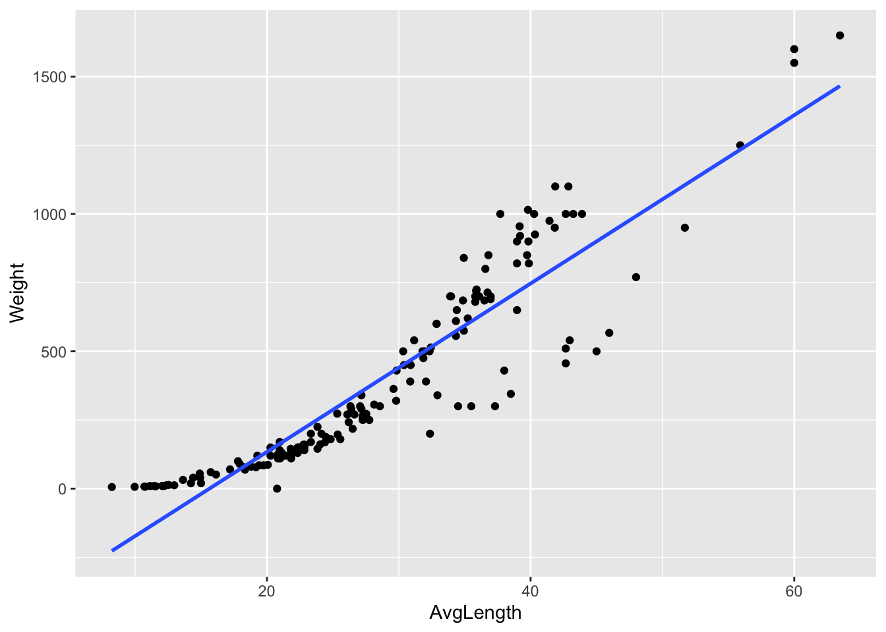
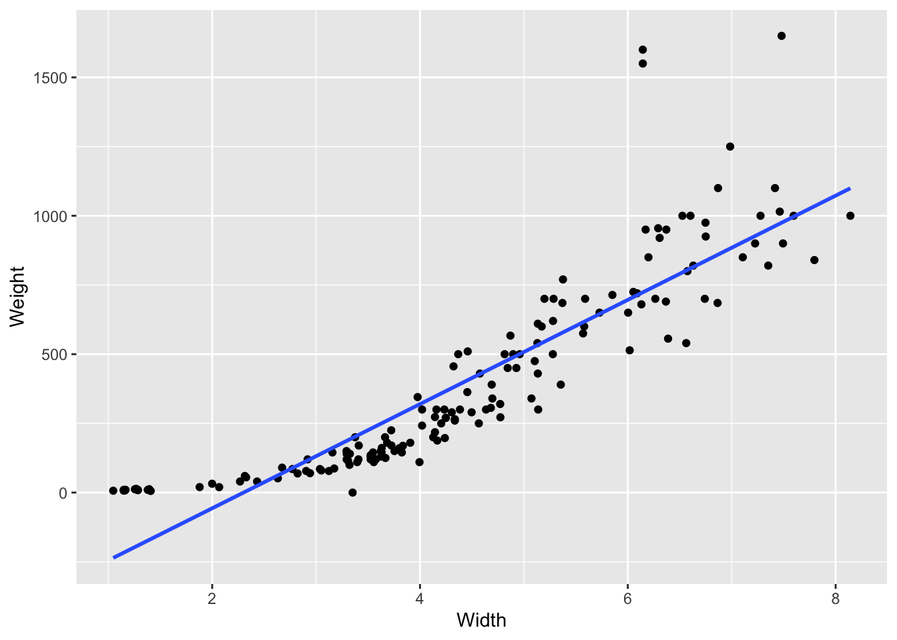
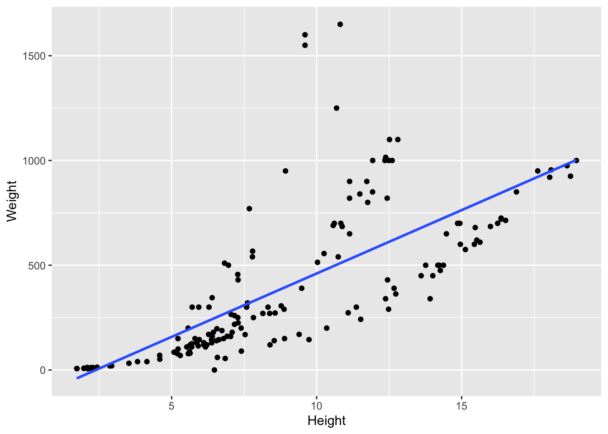

In this blog post I will be giving a tutorial on how to use the R package tidymodels to fit a regression model in the Tidy model framework. We will be using fish market data from Kaggle which can be found here: https://www.kaggle.com/datasets/aungpyaeap/fish-market. Though in this tutorial will be using a multiple linear regression, it should be noted that the same steps can be used for a simple linear regression.
First thing you should do is make sure that you have installed the proper packages for the Tiny Model framework. you can do this by using the install.packages() function. We will be using multiple packages additionally to the Tidy Models package. In the code chunk below you can see how to load packages and read in the data into R. (Make sure to change the data to YOUR working directory)
library(tidymodels) ## Registered S3 method overwritten by 'tune':
## method from
## required_pkgs.model_spec parsnip## ── Attaching packages ────────────────────────────────────── tidymodels 0.1.4 ──## ✓ broom 0.7.12 ✓ recipes 0.1.17
## ✓ dials 0.1.0 ✓ rsample 0.1.1
## ✓ dplyr 1.0.8 ✓ tibble 3.1.6
## ✓ ggplot2 3.3.5 ✓ tidyr 1.2.0
## ✓ infer 1.0.0 ✓ tune 0.1.6
## ✓ modeldata 0.1.1 ✓ workflows 0.2.4
## ✓ parsnip 0.2.1 ✓ workflowsets 0.1.0
## ✓ purrr 0.3.4 ✓ yardstick 0.0.9## ── Conflicts ───────────────────────────────────────── tidymodels_conflicts() ──
## x purrr::discard() masks scales::discard()
## x dplyr::filter() masks stats::filter()
## x dplyr::lag() masks stats::lag()
## x recipes::step() masks stats::step()
## x tune::tune() masks parsnip::tune()
## • Use tidymodels_prefer() to resolve common conflicts.# Helper packages
library(readr) ##
## Attaching package: 'readr'## The following object is masked from 'package:yardstick':
##
## spec## The following object is masked from 'package:scales':
##
## col_factorlibrary(dplyr)
library(ggplot2)
# Loading in our data, make sure you use the correct working directory
fishM <-
read_csv("/Users/mattsolone/Documents/School/Spring 2022/MATH 485/website-basic-mjsolone/Fish2.csv") %>%
mutate(AvgLength = (Length1+Length2+Length3)/3) # Creating a single column for the average length of the fish## Rows: 159 Columns: 7## ── Column specification ────────────────────────────────────────────────────────
## Delimiter: ","
## chr (1): Species
## dbl (6): Weight, Length1, Length2, Length3, Height, Width
##
## ℹ Use `spec()` to retrieve the full column specification for this data.
## ℹ Specify the column types or set `show_col_types = FALSE` to quiet this message.The Fish Market data set is a small data set with only 159 observations over 7(now 8) variables. We will be looking at the relationship between the Weight of the fish and the length, height, and width.
It is always good habit to do some exploratory analysis of the data to visually see if there is any linear relation prior to building your model.
ggplot(fishM,
aes(x = AvgLength,
y = Weight)) +
geom_point() +
geom_smooth(method = lm, se = FALSE) +
scale_color_viridis_d(option = "plasma", end = .7)## `geom_smooth()` using formula 'y ~ x'
ggplot(fishM,
aes(x = Width,
y = Weight)) +
geom_point() +
geom_smooth(method = lm, se = FALSE) +
scale_color_viridis_d(option = "plasma", end = .7)## `geom_smooth()` using formula 'y ~ x'
ggplot(fishM,
aes(x = Height,
y = Weight)) +
geom_point() +
geom_smooth(method = lm, se = FALSE) +
scale_color_viridis_d(option = "plasma", end = .7)## `geom_smooth()` using formula 'y ~ x'
We can see from this scatterplots, for each explanatory variable there seems to be a linear relationship.
Since our model is relatively straight forward we will use the formula where y is the response variable and \(x_i\) are the response variables. y ~ x1 + x2 + x3 or for our dataset Weight ~ AvgLength + Height + Width
For our model, an ordinary least squares should be a good approach. We will do this by declaring that we will be using linear regression with linear_reg() and then setting the “engine”(method for fitting or training) with set_engine("lm") then saving this to an object.
lm_mod <-
linear_reg() %>%
set_engine("lm")Finally we can apply this model by piping our Linear regression object to the fit() with the same specification as stated at the beginning of this section. We then can use the tidy() to format our results in a nice format.
lm_fit <-
lm_mod %>%
fit(Weight ~ AvgLength + Height + Width, data = fishM)
tidy(lm_fit)## # A tibble: 4 × 5
## term estimate std.error statistic p.value
## <chr> <dbl> <dbl> <dbl> <dbl>
## 1 (Intercept) -518. 28.9 -17.9 1.13e-39
## 2 AvgLength 21.2 1.92 11.0 2.91e-21
## 3 Height 9.70 3.83 2.54 1.22e- 2
## 4 Width 50.6 15.1 3.35 1.01e- 3And there you go ! You have now successfully fit a regression model in the Tidy models framework.